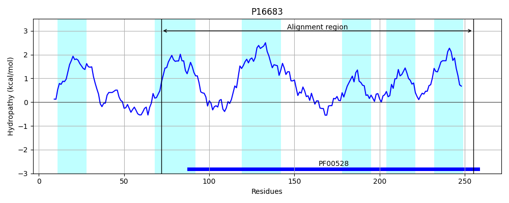
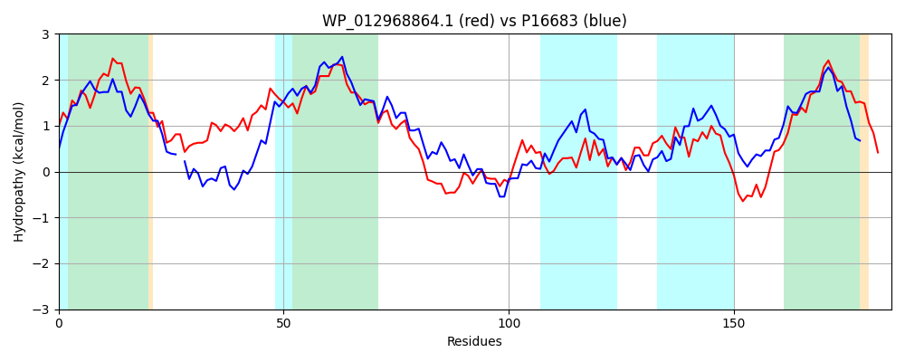

Hit Accession: P16683
Hit TCID: 3.A.1.9.1
Hit Description: gnl|BL_ORD_ID|9231 gnl|TC-DB|P16683|3.A.1.9.1 Phosphonates transport system permease protein phnE - Escherichia coli.
Mach Len: 185
e:0.000000
Query TMS Count : 4
Hit TMS Count: 6
TMS-Overlap Score: 2.950000
Predicted Substrates:CHEBI:34755;iron(3+)
BLAST Alignment:
Score: 359 , Bit scores: 142 bits, E-value: 3.2e-41, Alignment length: 185, Percentage identity: 43
Query: 98 TLQLALASTLVAVAIATIFAFLAANNAWTPAPVRFAIRVLVAFLRTMPELAWAVIFVMAFGIGAIPGFLALMLHTVGSLTKLFYEAVESAQNKPVRGLAACGASPLQKIRFALWPQVKPLFLSYGFMRLEINFRSSTILGLVGAGGIGQELMTNIKLDRYDQVSITLLLIILVVSALDMLSGRLR 282
TLQ+A+ T +AV ++ F ++A N P V +R L+ R + E+ +A++FV+A G+G G LAL +HT G L+KL EAVE+ + PV G+ A GA+ L++I + + PQV PL +SY R E N RS+T++G+VGAGGIG L I+ ++ Q ++LII+ VS LD LS RLR
Sbjct: 72 TLQIAVWGTALAVVLSIPFGLMSAENL-VPWWVYQPVRRLMDACRAINEMVFAMLFVVAVGLGPFAGVLALFIHTTGVLSKLLSEAVEAIEPGPVEGIRATGANKLEEILYGVLPQVMPLLISYSLYRFESNVRSATVVGMVGAGGIGVTLWEAIRGFQFQQTCALMVLIIVTVSLLDFLSQRLR 255 | Protein Hydropathy Plots: |
|---|
 |  |
Pairwise Alignment-Hydropathy Plot:
|
|---|
|  |